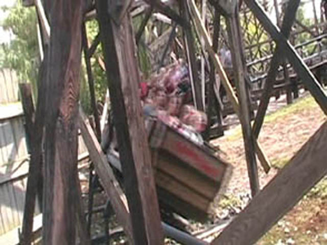
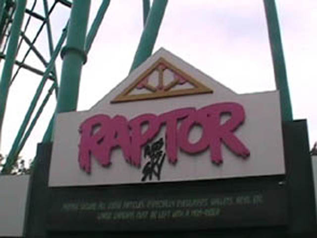
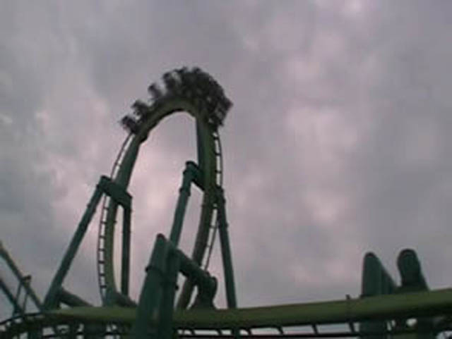
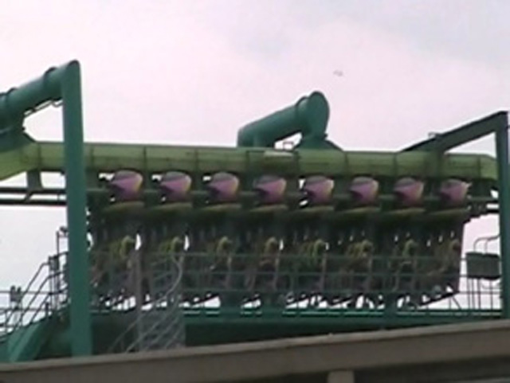
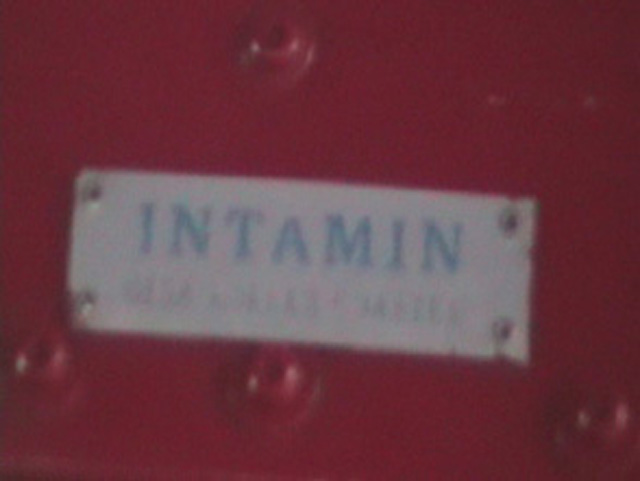

Get to the Point
Disneyland ResortGeauga LakeCedar PointHersheypark
The Day is here! A day I have been waiting for these past few months! My trip to Cedar Point!
 I have died and gone to Heaven!!!!
I have died and gone to Heaven!!!!
 Dominator may go through its corkscrews with more fury than 1000 stingrays, But Maverick goes through its entire circut with more fury than 100,000,000 stingrays!!
Dominator may go through its corkscrews with more fury than 1000 stingrays, But Maverick goes through its entire circut with more fury than 100,000,000 stingrays!!
 And Millions were killed today when Maverick went KABOOM!!!!!!
And Millions were killed today when Maverick went KABOOM!!!!!!
Maverick is very hungry. He is a victim... I mean people eater!
 RUN MAVERICK!!!! RUN!!!!!!
RUN MAVERICK!!!! RUN!!!!!!
 BITCHSLAP!!!!!
BITCHSLAP!!!!!
 OH CRAP! TIME TO FACE MEAN STREAK!!!
OH CRAP! TIME TO FACE MEAN STREAK!!!
 It is one Mean Coaster all right.
It is one Mean Coaster all right.
 Its not mean because its rough, Its mean because they trimmed it on the 1st Drop REALLY bad.
Its not mean because its rough, Its mean because they trimmed it on the 1st Drop REALLY bad.
Time for the Screamin Swing!
Hey Knotts, Guess how much I had to pay to ride Skyhawk?
 Vekoma can't jinx us on this Mine Train since its Arrow!
Vekoma can't jinx us on this Mine Train since its Arrow!

Like Goldrusher, Cedar Creek Mine Ride also has a helix of fake death.
 Hey Cody! You should have went on Gemini on your Cedar Point Trip! But what should I expect from a guy who soaks himself on Tidal Waves bridge on a Regular Basis?
Hey Cody! You should have went on Gemini on your Cedar Point Trip! But what should I expect from a guy who soaks himself on Tidal Waves bridge on a Regular Basis?
 Kicking other peoples asses hard on a coaster is always fun.
Kicking other peoples asses hard on a coaster is always fun.
Who needs Corkscrew when you have Maverick less than 100 yards away?
 Yippe!!! A Real Impulse! Not a Screwed Up one Like V2 @ SFDK!!!
Yippe!!! A Real Impulse! Not a Screwed Up one Like V2 @ SFDK!!!
Front seat rides on Wicked Twister make me Dizzy!
Two Times the Spinning, Two times the Nautiousness!!!!
Fly at the speed of Pinwheels!!!!!!
 Its the Super Frisbee! Faster than a speeding bullet and just can't spin that well. But Still!!!!
Its the Super Frisbee! Faster than a speeding bullet and just can't spin that well. But Still!!!!

Its time to Kick the Sky!
 We all love Raptor.
We all love Raptor.

Everyone needs to think that Raptor is better than Great Bear!

GOD DAMN IT B&M!!!! ARE YOU THE ONES CURSING US NOW!!!! I WAITED 2 HOURS FOR RAPTOR TO WAIT AND OPEN AND HAD TO REWAIT IN LINE!! F**K THE RAIN!!!!!
 Evenetually, Raptor decided to open up for us.
Evenetually, Raptor decided to open up for us.
 Like Maverick, Raptor also likes to slap around its Victims... I mean guests around.
Like Maverick, Raptor also likes to slap around its Victims... I mean guests around.
 COBRA ROLL MADNESS!!!!!
COBRA ROLL MADNESS!!!!!
 Like many rides, Raptor also has a helix of death.
Like many rides, Raptor also has a helix of death.
Time for Top Thrill Dragster. Or As Translated in General Public Language "The really freaking fast rollercoaster."
"Hey Bob, How high does The Really Freaking Fast Rollercoaster Go?" "To the freaking moon you dumass Lou! Its the biggest coaster in the world God Dammit!" "Oh, Did you hear about my date last night?"
 If you've ever wondered what a 120 mph train on straight track looks like, Then you're wish has come true. And if this is your wish, I don't even want to know what your life is about.
If you've ever wondered what a 120 mph train on straight track looks like, Then you're wish has come true. And if this is your wish, I don't even want to know what your life is about.
 Dragster goes up. Dragster goes Down.
Dragster goes up. Dragster goes Down.
 "I CAN'T BELIVE YOU TALKED ME INTO GOING ON THE REALLY FREAKING FAST ROLLERCOASTER BOB!!!!!!!"
"I CAN'T BELIVE YOU TALKED ME INTO GOING ON THE REALLY FREAKING FAST ROLLERCOASTER BOB!!!!!!!"
 Everyone gets Free Dragster Rides for the rest of the night!!!!
Everyone gets Free Dragster Rides for the rest of the night!!!!
 The next day, I went straight for Millenium Force.
The next day, I went straight for Millenium Force.

We can all thank Intamin for giving birth to this ride. It was tough and painful, but Intamin did it.
Ladies and Gentelmen, Get your tissues out, Its Millenium Forces Famous First Drop!
This doesn't have anymore airtime than Goliath.
 When I close my eyes, It feels just like Xcelerator!
When I close my eyes, It feels just like Xcelerator!
 The day never complete without kicking someones ass in a rollercoaster race.
The day never complete without kicking someones ass in a rollercoaster race.
And now, Its time to get Arrowfied.
Riders go out of their seats, Riders go in their seats.
Mmm. Pretzal Turn. Almost as fun as Tatsus Pretzal Loop!!!
Like X, Magnum proves that a rollercoaster can be SCREAMINGLY awsome and be made by Arrow.
He's my Best Friend! Best of all Best Friends! Do you have a Best Friend Too?
This is what happens when you don't wear a helmit on a Boomerang or SLC.
 This is Iron Draggin. It sucks major balls.
This is Iron Draggin. It sucks major balls.
 For once, I feel grateful that SFMM has Ninja.
For once, I feel grateful that SFMM has Ninja.
 This is Wildcat. AKA, Permanent Backdraft. And who wants to wait in a 30 min line for that when you can get 3 Magnum rides in the same time?
This is Wildcat. AKA, Permanent Backdraft. And who wants to wait in a 30 min line for that when you can get 3 Magnum rides in the same time?
Time for Cedar Downs. Or Translated in General Public, "The Merry Go Round on crack."
 This is Blue Streak. It, unlike Mean Streak is Nice.
This is Blue Streak. It, unlike Mean Streak is Nice.
 Blue Streak has something that Mean Streak can never have.
Blue Streak has something that Mean Streak can never have.
Uh Oh. It looks like Cedar Downs wasn't the only one handeling that crack.
 Welcome to Cedar Fairs Ghetto Space Mtn.
Welcome to Cedar Fairs Ghetto Space Mtn.
 All it needs is a little Red Hot Chilli Peppers Music and this ride would be perfect.
All it needs is a little Red Hot Chilli Peppers Music and this ride would be perfect.
Maverick is so awsome that it attracted Jerry from Ben and Jerrys.
 Speaking of Maverick being Awsome.
Speaking of Maverick being Awsome.
 You can't go to Cedar Point without reriding Maverick.
You can't go to Cedar Point without reriding Maverick.
 Maverick attempts to eject its victims... I mean people.
Maverick attempts to eject its victims... I mean people.
 Time for Mantis.
Time for Mantis.
 Mantis' loop isn't quite as big as Dominator's loop.
Mantis' loop isn't quite as big as Dominator's loop.
 While its not as good as Riddlers, Its still better than Vortex.
While its not as good as Riddlers, Its still better than Vortex.
 What the hell is this crap?
What the hell is this crap?
They had Fireworks in Milleniumn Forces Line.
This was a good last ride at Cedar Point. And while Millenium Force is a very fun ride...
THIS MAY BE THE NASTIEST BITCH I HAVE EVER DEALT WITH IN MY F**KING LIFE!!!! SHE IS REALLY THAT TERRIBLE!!! THIS PICTURE IS NOT A CRIME, I DID NOTHING WRONG YOU VILE BITCH!!!!! PHOTOGRAPHY IN THIS STATION IS PERFECTLY LEGAL AND YOU CAN NOT ENFORCE NONEXISTING RULES YOU DISGUSTING FAILURE OF A HUMAN BEING!!!!!!
Hersheypark
Home